La mixología es el arte y la ciencia de combinar sabores, aromas y técnicas
para crear experiencias únicas en cada copa. Desde los clásicos que marcaron
la historia hasta innovaciones modernas llenas de creatividad, la coctelería
invita a explorar sensaciones y emociones a través del sabor.
Este sitio te dará un recorrido por los fundamentos del bar: cómo surgió la
coctelería, qué bebidas se utilizan como base, cuáles son las técnicas esenciales,
y cómo poner en práctica tus conocimientos con un recetario de cócteles que podrás
preparar en casa o en el bar.
¡Bienvenido al fascinante mundo de la coctelería! 🍸✨
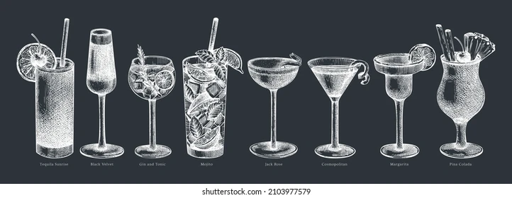
Historia de la coctelería
La coctelería nace como práctica social y culinaria: desde antiguas mezclas de bebidas y remedios hasta los bares modernos que perfeccionaron técnicas y estética. A continuación, una línea de tiempo con los hitos más importantes.
Siglos XVI–XVIII
Introducción de licores destilados en Europa y primeros mezclados. Medicina y bebidas se confunden.
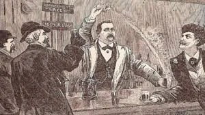
Siglo XIX
Bar culture: aparición de barras profesionalizadas en ciudades como Nueva York y Londres. Primeros manuales.
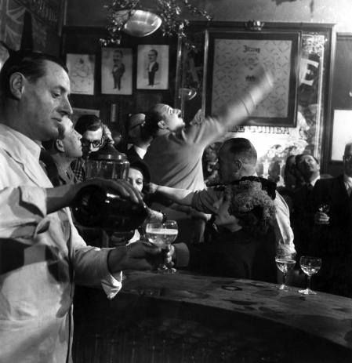
1920s
Prohibición en EE. UU. — creatividad en cócteles escondidos, auge de speakeasies.
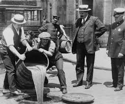
1950s–60s
Coctelería clásica y el glamour; se popularizan martinis, daiquiris y tiki drinks.
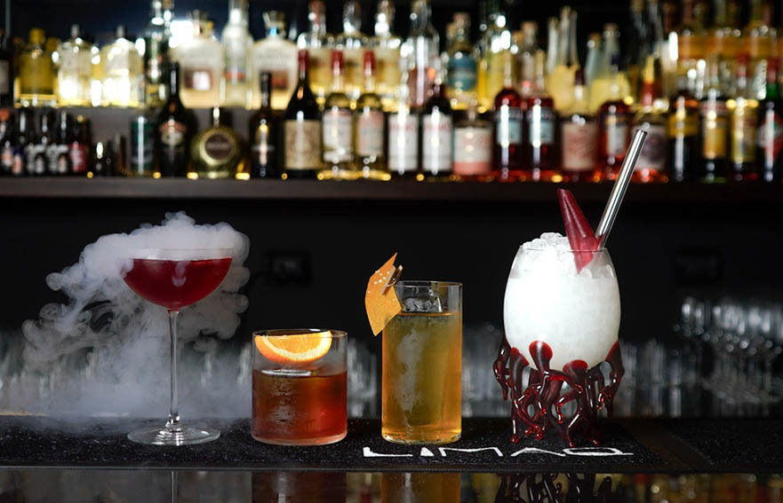
1990s–2000s
Renacimiento: mixología moderna, gastronomía líquida y cocteleros como chefs.
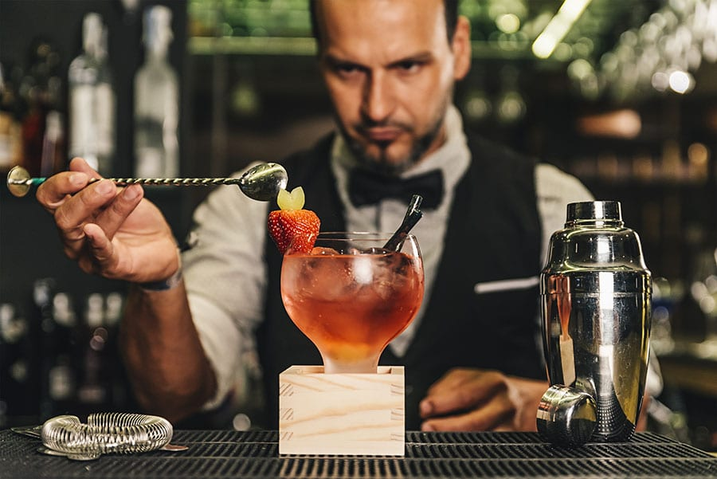
2010s–Hoy
Técnicas de laboratorio, coctelería molecular y énfasis en ingredientes locales y sostenibles.
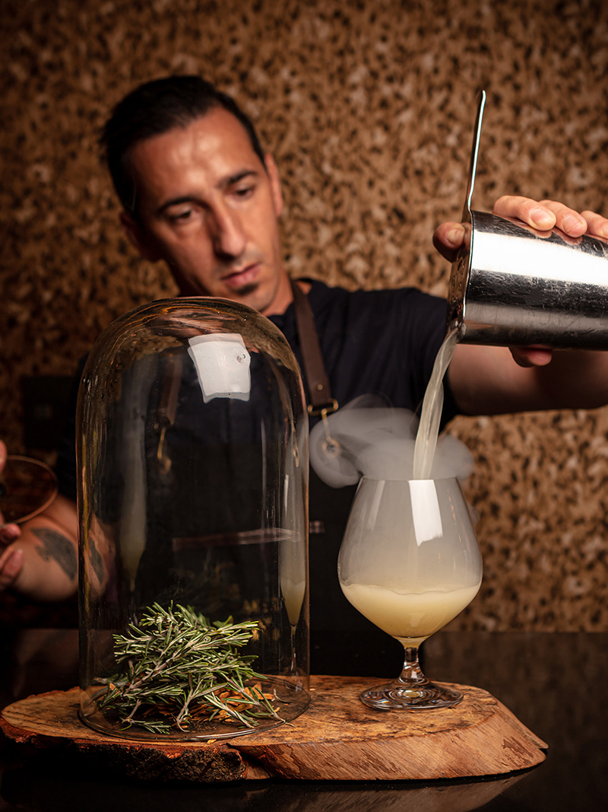
Clasificación de las bebidas
Las bebidas en mixología se agrupan principalmente en:
Destilados
Vodka, Ginebra, Ron, Tequila, Whisky.
Fermentados
Vino, Cerveza, Sake, Sidra.
Licores y aromatizados
Vermouth, amargos, licores dulces.
No alcohólicas
Jugos, sodas y mocktails.
Todos
Destilados
Fermentados
Licores y aromatizados
Sin alcohol
Todas las bebidas
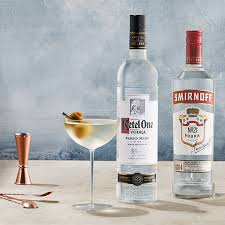
Vodka
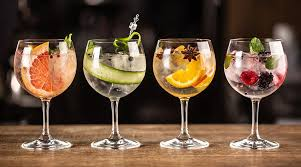
Ginebra
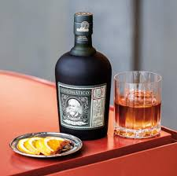
Ron
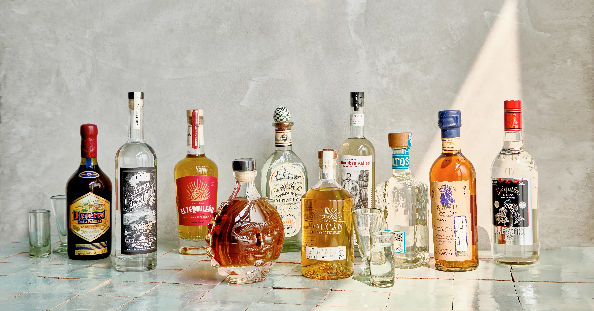
Tequila
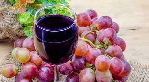
Vino
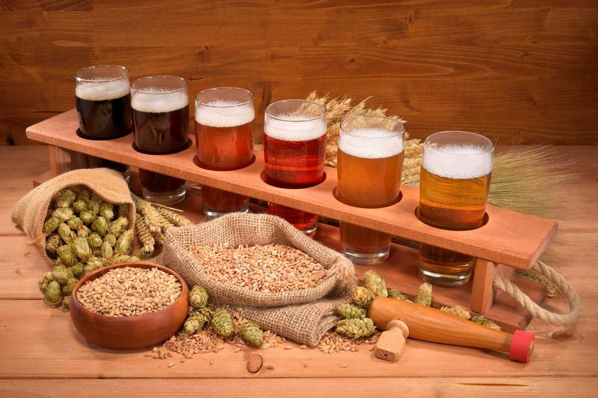
Cerveza
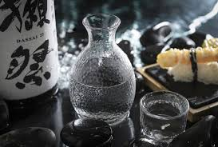
Sake
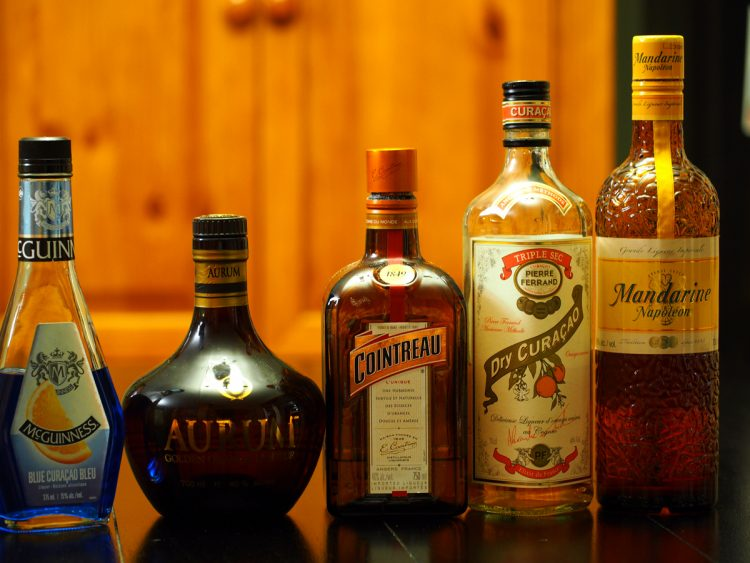
Triple sec
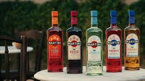
Vermouth
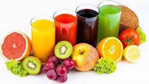
Jugos
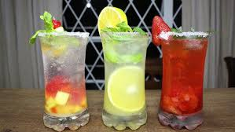
Soda
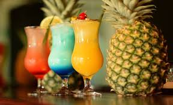
Mocktails
Técnicas de elaboración de cócteles
Descripción de técnicas básicas y cuándo usarlas:
Agitado (shaking): Para cócteles con jugos, lácteos o ingredientes densos. Uso: coctelera.
Removido (stirring): Para cócteles claros y espirituosos donde no quieres aeración (ej. Manhattan, Martini).
Colado (straining): Usar coladores (Hawthorne y fino) para separar hielo y pulpa.
Maceración / muddling: Aplastar hierbas o frutas para liberar aromas (ej. Mojito).
Flameado / flambé: Técnicas para aromas y espectáculo (usar con precaución).
En mixología, la correcta elección de la cristalería y los utensilios es clave para lograr un
cóctel bien elaborado y visualmente atractivo. Cada herramienta cumple una función específica:
medir, mezclar, enfriar o servir con precisión; mientras que el tipo de copa o vaso influye en
la percepción de aromas, temperatura y estética de la bebida.
Dominar su uso no solo mejora la técnica del bartender, sino que eleva la experiencia del consumidor
a un nivel más profesional y sensorial.
Tipos de cristalería
Copa Martini: Ideal para cócteles secos y elegantes.
Vaso Old Fashioned: Para bebidas cortas con hielo grande.
Highball: Perfecto para cócteles con soda o jugos.
Coupé: Alternativa refinada para cócteles clásicos.
Utensilios esenciales
Coctelera (Boston o Cobbler)
Coladores (Hawthorne y fino)
Jigger para mediciones exactas
Muddler para macerar frutas y hierbas
Cucharilla de bar para remover
Mobiliario y diseño del bar
Consejos para organizar un bar funcional:
Zonificación: Barra de servicio, estación de preparación, refrigeración y almacenamiento.
Accesibilidad: Utensilios a mano, botellas ordenadas por uso y frecuencia.
Estética: Iluminación focal, materiales resistentes y una línea visual que invite a quedarse.
Destilados y fermentados
Resumen de procesos y ejemplos:
Destilación
Proceso que concentra alcohol al calentar un líquido fermentado y condensar los vapores. Ejemplos: whisky, vodka, ron, tequila. Influye el tipo de materia prima, alambique y cortes (foreshot, heart, tail).
Fermentación
Conversión de azúcares en alcohol por acción de levaduras. Ejemplos: vino, cerveza, sake. El carácter final depende de la cepa, temperatura y tiempo.
Recetario de cócteles (15 recetas)
Cada receta incluye: ingredientes, técnica, cristalería, y notas de servicio.
Negroni
Clásico — destilado
Martini / Rocks • 3 ingredientes
Ingredientes
30 ml Gin
30 ml Campari
30 ml Vermouth rojo (dulce)
Técnica
Remover en vaso mezclador con hielo (stir), colar sobre hielo en vaso old-fashioned. Decorar con cáscara de naranja.
Notas
Balance amargo-dulce. Ideal como aperitivo.
Margarita Clásica
Tequila — shaken
Coupé / Rocks • 3 ingredientes
Ingredientes
50 ml Tequila blanco
25 ml Triple sec (Cointreau)
20 ml Jugo de lima fresco
Sal para el borde (opcional)
Técnica
Agitar con hielo (shake), colar en coupé con borde salado o servir en rocks con hielo.
Old Fashioned
Whisky — stirred
Old Fashioned • 3 ingredientes
Ingredientes
60 ml Bourbon o Rye
1 cucharadita de azúcar o 10 ml de sirope simple
2 dashes Angostura bitters
Técnica
Macerar el azúcar con bitters, añadir whisky y hielo grande, remover suavemente. Decorar con cáscara de naranja flameada (opcional).
Mojito
Ron — macerado
Highball • refrescante
Ingredientes
45 ml Ron blanco
30 ml Jugo de lima
8–10 hojas de hierbabuena
2 cucharaditas de azúcar o sirope
Agua con gas
Técnica
Macerar la hierbabuena con azúcar y lima, agregar ron, hielo y completar con soda. Revolver suavemente.
Martini Seco
Ginebra • stir
Coupé • elegante
Ingredientes
60 ml Ginebra
10 ml Vermouth seco
Técnica
Remover en vaso mezclador con hielo, colar en copa fría y decorar con oliva o twist de limón.
Daiquiri Clásico
Ron — shaken
Coupé • cítrico
Ingredientes
50 ml Ron blanco
25 ml Jugo de lima
15 ml Sirope simple
Técnica
Agitar con hielo y colar en copa fría.
Cosmopolitan
Vodka — shaken
Coupé • 4 ingredientes
Ingredientes
45 ml Vodka
15 ml Cointreau
15 ml Jugo de lima
30 ml Jugo de arándanos
Técnica
Agitar y colar. Decorar con twist de naranja.
Whisky Sour
Bourbon — shaken
Old Fashioned/Coupé • con clara opc.
Ingredientes
60 ml Bourbon
30 ml Jugo de limón
20 ml Sirope simple
Clara de huevo (opcional) 15 ml
Técnica
Agitar en seco (sin hielo) si usas clara, luego con hielo. Colar y decorar con cereza y rodaja de limón.
Pisco Sour
Pisco — shaken
Coupé • clásico peruano
Ingredientes
60 ml Pisco
30 ml Jugo de limón
20 ml Sirope simple
Clara de huevo (15–20 ml)
2 dashes Amargo de Angostura
Técnica
Agitar en seco con clara y luego con hielo. Servir y añadir amargo en la espuma.
Espresso Martini
Vodka — shaken
Coupé • energizante
Ingredientes
40 ml Vodka
30 ml Café espresso frío
20 ml Licor de café (Kahlúa)
10 ml Sirope simple
Técnica
Agitar vigorosamente para crear espuma, colar fino.
Tom Collins
Ginebra — highball
Highball • refrescante
Ingredientes
50 ml Ginebra
30 ml Jugo de limón
15 ml Sirope simple
Soda
Técnica
Agitar gin, limón y sirope con hielo, colar sobre hielo y completar con soda.
Boulevardier
Whisky + vermouth — stirred
Rocks • amargo
Ingredientes
30 ml Bourbon o Rye
30 ml Campari
30 ml Vermouth rojo
Técnica
Remover con hielo, colar sobre hielo. Pariente cercano del Negroni.
Paloma
Tequila — highball
Highball • cítrico
Ingredientes
50 ml Tequila
30 ml Jugo de toronja
15 ml Jugo de lima
Soda de toronja o agua con gas
Técnica
Servir en vaso alto con hielo y completar con soda.
Mimosa / Mockmosa
Fermentado — brunch
Copa flauta • simple
Ingredientes
75 ml Champagne o cava (o soda para versión sin alcohol)
75 ml Jugo de naranja natural
Técnica
Servir en flauta con cuidado para conservar burbujas. Para versión sin alcohol usar soda y jugo natural.
Clover Club
Ginebra — shaken con clara
Coupé • frutal
Ingredientes
45 ml Ginebra
15 ml Sirope frambuesa
20 ml Jugo de limón
Clara de huevo 15 ml
Técnica
Agitar en seco con clara, luego con hielo. Colar fino y servir en coupé fría.
Invitación
Te invitamos a descubrir y explorar el fascinante mundo de la mixología, donde la creatividad,
los sabores y las técnicas se unen para transformar una bebida en una experiencia.
A lo largo de esta página podrás conocer la historia, los utensilios, la cristalería y
los secretos detrás de las preparaciones más emblemáticas.
Atrévete a experimentar desde casa, pon a prueba tus habilidades y disfruta del arte de mezclar.
Prepara nuestros cócteles sugeridos, personaliza tus ingredientes y permite que cada sorbo sea
una nueva oportunidad para aprender y sorprender. ¡La barra ahora está en tus manos!
Fuentes y referencias
Allen, R. (2020). The Bartender’s Guide to Cocktails: Techniques, Recipes & Spirited History. New York, NY: Sterling Publishing.